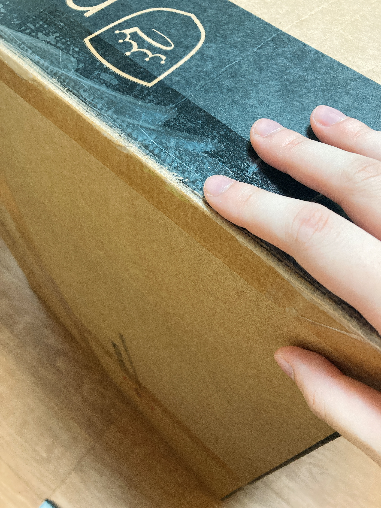
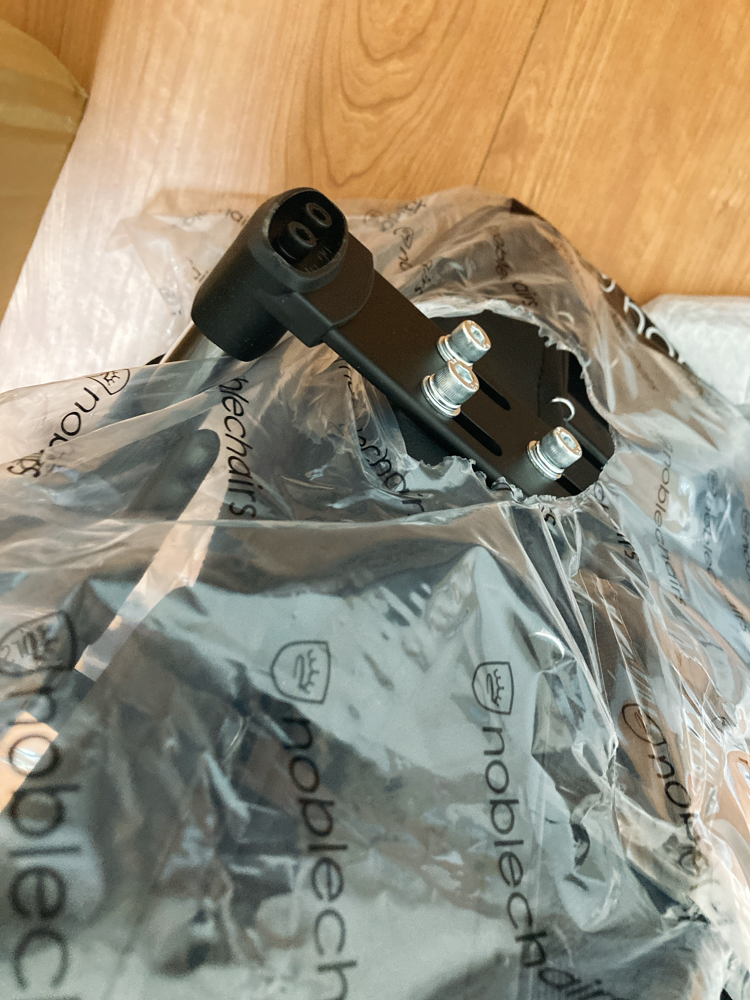
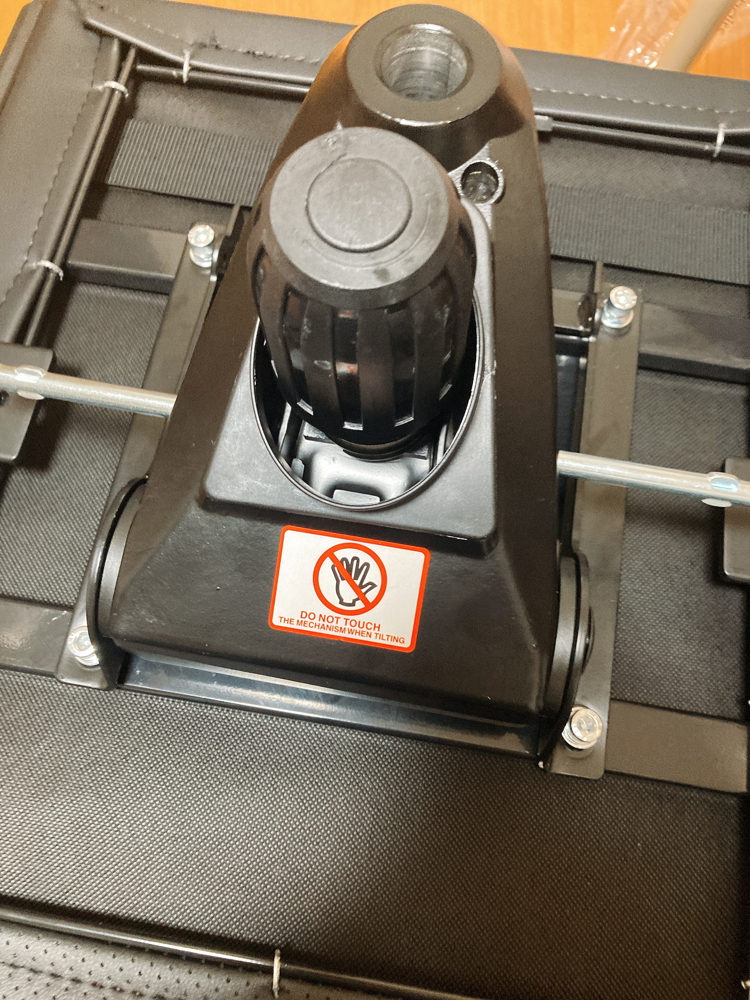
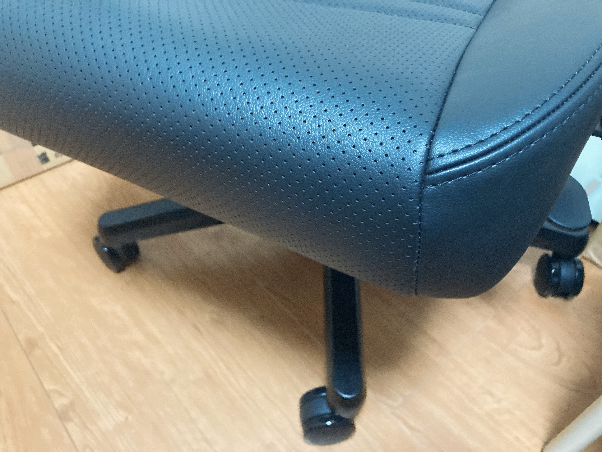
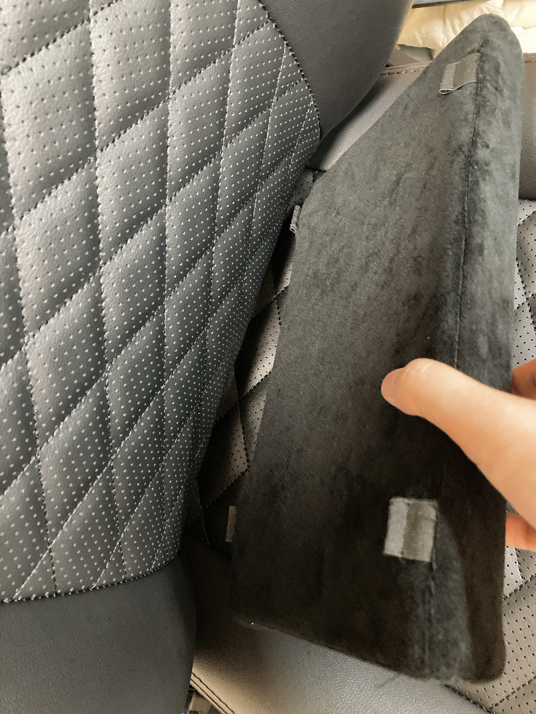

部屋掃除しないとヤバい
とうとう寝る場所がなくなってしまった。なにを言っているのかわからないと思うが……。
最近あらゆるものを買い揃えているわけですが、本命のディスプレイが到着するまで開封作業に入れない（入りたくない）ものがいくつかあり、ただでさえ狭い部屋がどんどん荷物で埋まっていっています。昨日はモニターアームが入ったダンボールの横で寝ました。まあ部屋の掃除ができないタイプなので慣れっこではあります。そんな中本日届いたのが。

クソデカダンボール。椅子です。ちなみに立ってぽんと手を置いた位置がこれみたいな高さ。
寮住みなので共用スペースという名のクソデカスペースを借りることができてめちゃくちゃ助かりました。取説見ると思いっきり「2人で組み立ててね！」って書いてますが、あいにくぼっちなので一人でなんとかします。

元から穴が開いてる斬新な袋。かの有名な林檎のペロペロほどではないですが、袋が突っかかることなくさっと破けたり付属品の箱がぱっと開いたり、開封に伴うストレスが減らされてて流石金払っただけあるなあって感じ。まあ、布製品なので刃物使わないと開けられない仕様にするのはまずいんでしょうね。

椅子の付け根のところ。このパーツが一番重かった。

脅されたわりには結構すぐ椅子っぽいサムシングが完成して感動した。だがしかしここで、このまま背もたれを固定すると自室に持ち込めないのでは？という懸念に思い至る。やばそうなのでこれと背もたれを別のまま自室まで移動。
ここから写真は上げられないよ！なんですけど、それなりに苦労なく背もたれが固定できたところで、一瞬だけ相当クソデカな椅子を買ってしまったという後悔が。いや、掃除する前に届いてしまったせいで部屋内に椅子を移動するスペースが存在せず、元々机とベッドの間が狭いせいで一度椅子に座ると物理的に立ち上がれないというギャグみたいな状況が発生して数分間笑ってた。いや、笑い事ではないのでなんとか床周辺のものを減らして最低限の移動可能領域だけ確保した。一応椅子が回転できるようになったときの感動といったら……()
それなりの椅子なので思いっきりリクライニングができて割とがっつり寝れる。掃除下手マンなので結構な頻度でベッドの上が荷物で埋まってしまうんだけど、緊急時でも睡眠可能スペースを確保できるのはかなりつよい。掃除してくださいって？わかるなあ。
実はまだまだものが来るのでそろそろガチで掃除しないとやばい。今週末、土曜はゲーセンに行きたいので、日曜頑張るしか。おえかきの続きは……またいつか……。

ちなみにこのもふもふ、どうやって固定するんですか？？？()